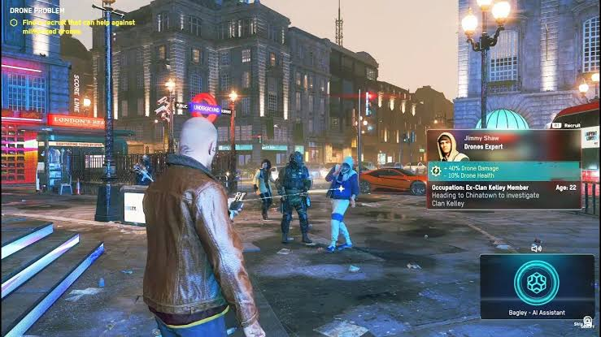

Story
เนื้อเรื่องเกิดขึ้นในกรุงลอนดอน ประเทศอังกฤษ ที่ความรุนแรงและความวุ่นวายลุกลามไปทั่วเมือง
มีการก่อตั้งกองกำลังเผด็จการออกมากำราบผู้ต่อต้านด้วยความรุนแรงแบบตาต่อตา ฟันต่อฟัน จึงให้เหล่า DeadSce
เริ่มก่อตั้งกองกำลังต่อต้านเพื่อนำความสงบสุขกลับคืนมา
Gameplay
ที่เปิดเผยออกมาแล้วนั้นมีดังต่อไปนี้
• ผู้เล่นจะสามารถควบคุมตัวละครได้หลากหลายคน แต่ละคนจะมีประวัติปูมหลัง เสียงพากย์
และความสามารถที่แตกต่างกันไป
• ตัวละครที่เล่นเมื่อตายจะถือว่าตายอย่างถาวร ไม่มีการคืนชีพ
ผู้เล่นก็สามารถเลือกให้ตัวละคร
ที่เป็นคนรู้จักหรือเพื่อนของคนที่ตายไปล้างแค้นได้
และเราจะได้เห็นตัวละครคนนั้นไปเยี่ยมหลุมศพของเพื่อนได้ด้วย
• ลูกเล่นในการแฮกจะมีความหลากหลายมากขึ้น เช่นการแฮกรถแท็กซี่ไร้คนขับ การใช้โดรนแมงมุมเข้าโจมตีศัตรู
• การ Take Down จะมีทั้งแบบถึงฆาตและแค่ทำให้สลบ
• สามารถเกณฑ์คนเข้ามาร่วมในกองกำลังต่อต้านได้เรื่อย ๆ และเลือกที่จะเล่นเป็นใครก็ได้ตามที่ต้องการ
แม้แต่อดีตสายลับหรือนักฆ่าผู้เกษียณแล้ว เป็นต้น
• วางจำหน่ายในวันที่ 6 มีนาคม 2020

ชาว London ทุกคนในโลกเปิดของเกมจะถูกสร้างขึ้นมาอย่างสมบูรณ์แบบ
มีทั้งชีวิตของตนเองและภูมิหลังของตนเอง และผู้เล่นก็สามารถชักชวนใครก็ได้จากจำนวนพลเมืองทั้งหมดมาเข้าทีม
ทุกตัวละครจะส่งผลต่อเกมเพลย์ที่ต่างกันออกไปตามประวัติของตัวละครนั้น ๆ เมื่อพวกเขาเข้าร่วมทีม
ผู้เล่นจะได้เลือกคลาสของพวกเขา เช่น เพิ่มเลเวล ปลดล็อกความสามารถ รวมไปถึงอัปเกรดใหม่ ๆ
ผู้เล่นสามารถสลับสับเปลี่ยนระหว่างตัวละครได้ง่ายดายเพื่อรับมือกับความท้าทายของเกมในแบบที่ต้องการ โดยใช้การแฮ็ก ,
ใช้โดรน หรือจะวิธีต่อสู้ โดยการลอบเร้น สู้ประชิดและยิงถล่ม
ไม่ว่าจะมุ่งเอาชีวิตหรือเน้นเอาสลบก็ตาม ใน Watch Dogs Legion นี้
ทางเลือกของผู้เล่นจะส่งผลกระทบอย่างใหญ่หลวง หากเลือกใช้วิธีไม่ฆ่าใคร ศัตรูก็จะพยายามเน้นจับกุมผู้เล่นแทน
แต่หากผู้เล่นเลือกที่จะฆ่าแล้วล่ะก็ ตัวละครของพวกเขาอาจได้รับบาดเจ็บหรือตายถาวรไปเลยก็ได้

ใน Watch Dogs Legion ผู้เล่นจะได้ชักชวนทีมของตนเพื่อเล่นออนไลน์ โดยสามารถร่วมทีมกันได้สูงสุด
4 คนในโหมดแบบ co-op ซึ่งสามารถนำความก้าวหน้าไปใช้ร่วมกันได้ในโหมดเล่นคนเดียวและโหมดออนไลน์ด้วย